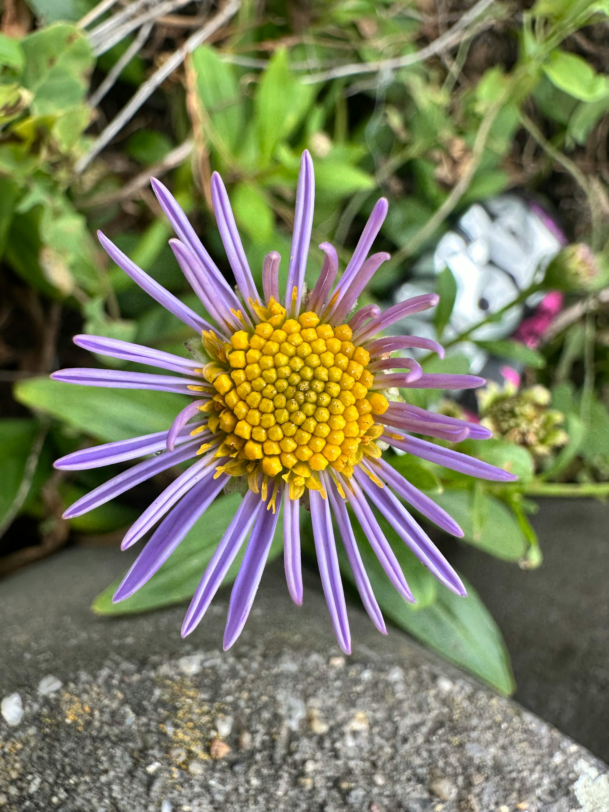

{kind=link}
As a photographer specializing in black and white imagery, I embrace the timeless elegance and emotional depth that monochrome photography offers. By stripping away color, I focus on the play of light and shadow, texture, and composition to reveal the true essence of my subjects. Whether capturing intimate portraits, dramatic landscapes, or candid moments, black and white photography allows me to tell compelling stories that resonate on a deeper level. This style emphasizes contrast and mood, making every detail more striking and every expression more profound. Through careful attention to framing and tonal balance, I create images that are not just photographs but pieces of art that evoke nostalgia, mystery, and raw human emotion. For me, black and white photography is about distilling moments to their purest form, inviting viewers to connect with the subject beyond the distractions of color.
Session Info
| Session Length: | 60 to 90 minutes |
| Location: | Professional studio or at home |
| Proofing: | Professional online proofing to check the quality before pulling the trigger |
| Package: | €199 for 10 high quality, high resolution pictures |